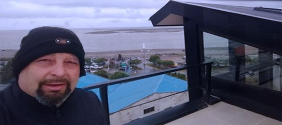

Hablemos!
Hermanos Roa
Somos techistas que trabajamos en el ruburo desde hace 25 años.
Nuestra base se encuentra en el Talar de Pacheco pero hemos realizaco trabajos en toda la provincia de Buenos Aires.
Nuestro fuerte son las contrucciones y reparaciones pero tambien hacemos trabajos con
especializacion en :
- Zingueria.
- Pintura de techo.
- Revestimiento de aleros.
- Colocacion de chapas y estructuras metalicas.
- Colocacion de claraboyas.
- Pergolas.
- Imperbealizacion de loza.
- Colocaion de membranas.
- Colocacion de vidrios fijos.
- Colocacion de tinglados.
- Colocacion de decks.
- Arreglos de techos.
Participantes
Los que formamos parte de esta familia
Diego
25 años de experiencia en la construccion de techos
"Somos trabajadores especializados en trabajos de altura, con un interés específico en los proyectos profecionales en pos de la mejor calidad. Nuestro trabajo refleja una apreciación de los patrones no intrincados, atención de la superficie, gestion del material, el tiempo y la capacidad, inspirado en un entusiasmo por bocacion de esta materia. Actualmente buscamos un ambiente inspirador que nos permita desarrollar un buen trabajo, respetando nuestra libertad creativa como tambien nuestro conociemiento en esta bocacion".
¿Por qué es un buen techista?
En principio porque trabajamos para que nos recomienden, la base de ello es hacer bien las cosas, y en particular porque siempre nos debemos al acabado profecional.

Oscar
25 años de experiencia en la construccion de techos
"Cuando nos llama una persona, busca una solucion y lo importante es saber responder sin tener en cuenta el nivel del inconveniente o de la situacion. Gracias a la experiencia tenesmos soluciones, es eso lo que permite y lo que da, el realizar todo tipos de trabajos".
¿Cual seria su punto mas fuerte?
La expériencia, podria decir un trabajo en especifico, pero la experiencia es clave porque es lo que da el mejor resultado y tiempo para resolverlo, al haber hecho ese trabajo antes sabes de antemano que tenes que hacer y como hacerlo.